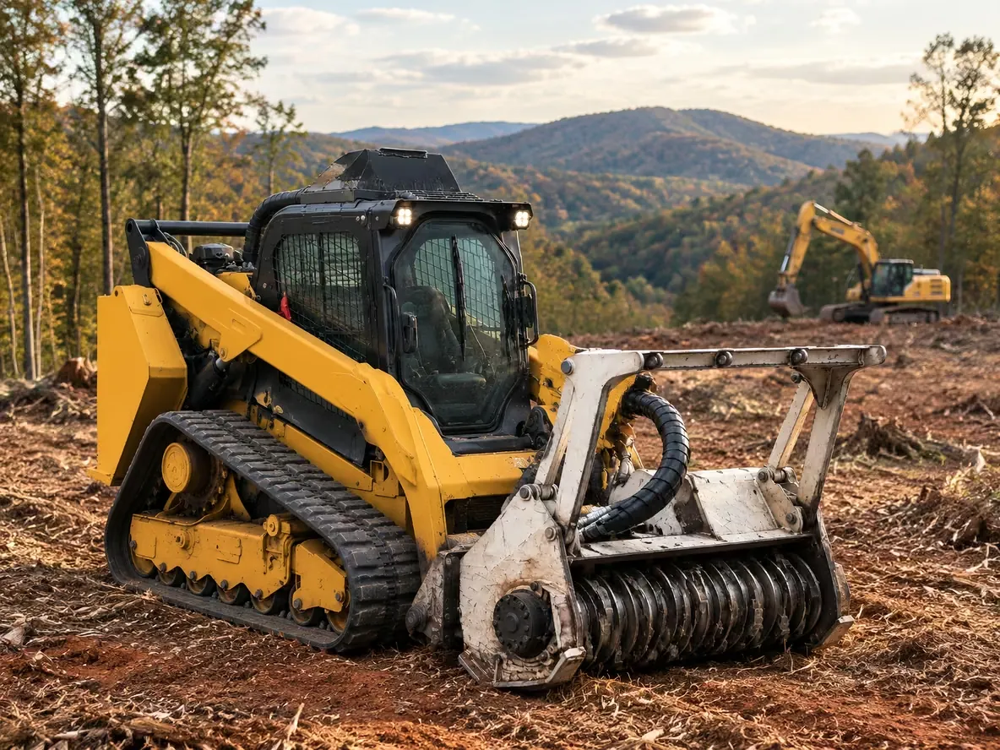

Choosing land clearing equipment starts with the ground in front of you, not the biggest machine available. Brush, mature trees, Carolina red clay, steep slopes, tight access, and the finish you need all shape the right equipment combination. When we plan land clearing in Charlotte, NC, we match tracked carriers, drum mulchers, excavators, and stump grinders to what the property must be ready for next.
- Brush density: Light saplings vs. thick briars and vines.
- Trees over 8″ thick: How many larger trees need removal.
- Slope & terrain: Flat ground vs. steep banks or gullies.
- Rocks & obstacles: Surface rock, tight access, or structures to work around.
Key Takeaways
- Best equipment depends on the job. A forestry mulcher suits many brush and sapling jobs, while root removal and stump grinding call for different tools.
- Match the carrier to the site. Access, turning room, soil conditions, slope, and attachment requirements all matter.
- Mulching processes surface growth. It leaves roots and most stumps in place, with shredded vegetation spread as ground cover.
- Sequence the work. Mark protected areas first, handle vegetation and stumps next, then coordinate any follow-on site work and erosion control.
- Rent for a defined task you can safely operate. For complex sites, compare contractor costs against the complete rental, transport, attachment, and cleanup workload.
- What equipment is required to clear land? It depends on whether you need brush cut, trees felled, roots removed, or debris hauled.
Start with the vegetation, terrain, and finished result
The best land clearing equipment is the combination that leaves the site in the condition you need. Grass and brush, saplings, mature trees, roots, and stumps are different kinds of work, and a machine that cuts vegetation at ground level does not automatically remove its root system.Decide whether the finished ground should have a protective mulch cover, be cleared of debris, or have roots and stumps removed for future construction. A mulched trail or field edge has different requirements from a home footprint where buried roots and stumps can interfere with foundations or driveway preparation.
Next, judge access and ground conditions. A machine needs room to travel and turn, and an oversized carrier can damage soft ground, tree roots, fences, or drainage features, especially on a wet Piedmont slope.
Before equipment arrives, locate buried utilities and drainage paths, identify erosion-sensitive ground, and mark keeper trees and work limits. On Carolina red clay, roots and a mulch layer can help protect soil, while aggressive pushing and heavy traffic can expose ground that is vulnerable to runoff.
For a defined site such as a pool, barn, or outbuilding location, planning around the specific finished use matters because the needed machine and work steps depend on whether you want surface growth mulched or stumps and roots removed.
Every tract of land in the Carolina Piedmont is unique. In Mecklenburg, Union, and Cabarrus counties, an open pasture grown up in broomstraw and young red cedar is a different job from mature hardwoods on a sloped red-clay ridge.
Use skid steers and compact track loaders for adaptable brush work
A skid steer or compact track loader suits maneuverable work on smaller or tighter sites, and attachments let one carrier take on different clearing tasks. Tracked models spread their weight over more ground than wheeled models, so they can be a better fit on softer surfaces when conditions allow.
A forestry mulcher attachment cuts and grinds brush, briars, saplings, and smaller trees into mulch on the ground. It handles surface growth, not stump or root removal; the roots stay in place unless you bring in a separate method.
A brush cutter is useful when the job is to cut lighter vegetation and fine mulch is not the main requirement. Before renting or mounting either attachment, match its weight, hydraulic flow and pressure, mounting interface, and operating limits to the carrier.
What does each type of land-clearing machine do best? A compact track loader works well for adaptable brush tasks, a bulldozer moves large volumes of vegetation on broad tracts, and an excavator offers controlled digging and material handling. Attachments and support machines handle cutting, gathering, grinding, and hauling.Lakefront and shoreline work makes access, soft ground, and the vegetation to retain especially important; the machine must suit the shoreline as well as the brush.
One tracked carrier fitted with a high-speed drum mulcher shreds brush, briars, saplings, and small trees directly into a bed of wood mulch where they stand. Roots stay in the ground to hold Carolina red clay in place while the shredded mulch acts as an immediate ground cover.
| Attachment | Best suited to | What it leaves or handles |
|---|---|---|
| Forestry mulcher | Brush and smaller woody growth | Processes vegetation on the ground into mulch |
| Brush cutter | Lighter vegetation | Cuts growth for separate handling or cleanup |
| Grapple | Loose brush and logs | Grips, gathers, and loads material |
In 2025, the U.S. off-highway equipment manufacturing industry generated $902 billion in total sales activity and supported 2.2 million jobs nationwide, according to the Association of Equipment Manufacturers.
Choose bulldozers and excavators for different heavy work
A bulldozer is suited to broad, heavy clearing when the plan includes moving substantial vegetation across open tracts. It is a poor fit where preserving topsoil, tree roots, or erosion-sensitive ground matters more than moving material quickly.
An excavator with a suitable bucket, thumb, or grapple offers more controlled digging, lifting, and handling around selected trees and site features. Use that control to remove specific material without treating the entire area as a push-and-clear zone.
Root balls and stumps need their own removal plan. A mulcher cuts surface growth; an excavator can dig out roots and stumps, while a stump grinder reduces a stump without excavating the entire root system.
Undersized equipment can struggle with dense woody growth or root removal, leaving difficult material behind. That can mean more work later, including new growth from roots that were never removed.
For the separate stump-removal stage, stump grinding or full root extraction fits after cutting or mulching has opened access to the stump.
Pair cutting tools with grapples, chippers, and stump equipment
Attachments divide the work into distinct jobs: cutting standing growth, gathering what has been cut, processing branches, and reducing stumps. A grapple grips, gathers, and loads loose brush or logs, so it needs to be paired with a felling or cutting method rather than treated as a cutting tool.
A tree shear cuts suitable standing stems. Plan how the cut material will be held, lowered, or moved before making the cut, especially near fences, structures, and trees you intend to keep.
A brush chipper turns suitable branches and brush into portable chips that can be hauled or used elsewhere. A forestry mulcher instead processes vegetation on the ground, leaving the mulch in place.
A stump grinder reduces stumps where full excavation is unnecessary. When debris must leave the site, use a chipper, haul vehicle, or loader with a grapple to gather and move it.
When opening a selected woodland opening or food plot, decide early whether cut vegetation should be mulched on site or handled separately.
Mulching can keep brush processing on site and avoid burn piles and haul-off for suitable work. Hauling is the better fit when the required finish calls for removing logs, stumps, or other debris from the property.
Plan the sequence from clearing through site hand-off
Mark property boundaries, work limits, and protected trees before machines move in. Then clear access and cut or mulch vegetation before stump grinding or root removal, so operators can reach the remaining material safely.
Separate vegetation that will be mulched in place from logs, brush, and stumps that must be gathered or hauled. That planning reduces repeated machine passes and keeps material from being moved more than necessary.
On steeper foothill and mountain tracts where switchbacks, narrow entries, and runoff require extra planning, see our guide to land clearing in Western North Carolina for how terrain and slope stability shape equipment sequencing.
Coordinate drainage and erosion control with any follow-on site work, because leaving bare soil exposed on a slope can invite runoff and erosion.
Use hand tools near valuable trees, fences, utilities, and small sensitive areas when powered equipment could disturb more ground than the task requires. Keep cutting tools sharp and work with a clear view of nearby people and obstacles.
A usable access corridor helps equipment reach the work area without repeatedly crossing sensitive ground, making driveway and access road clearing an access-first stage of a larger project.
For commercial and development parcels, clearing to approved plans, protecting tree-save areas and buffers, and coordinating with erosion control helps define where clearing stops and where the next site-work stage begins.
Decide whether to rent equipment or hire a contractor
Renting can suit a small, clearly defined task when you already have relevant operating experience and can manage transport, attachment setup, fuel, and safe use. Can you rent land clearing equipment? Yes, but the rental only solves the machine question; you still need the right attachment, compatible carrier, and a plan for handling the cut material.
Hiring a contractor is worth considering for dense vegetation, steep or sensitive ground, large tracts, complex root removal, or work that must be coordinated with builders. Every project is managed directly by experienced operators, and a joint on-site walkthrough helps set boundaries, identify keeper trees, discuss access, and define the finish before work begins.
Compare the entire task rather than the machine's rental charge alone. Include mobilization, compatible attachments, debris handling, operator time, and the finish you need, whether that is a mulch-covered trail or a cleared building envelope.
Wear the protective equipment required for the machine and keep bystanders outside its working and swing areas. Stop and reassess if visibility, footing, or control of cut material becomes poor.
Online per-acre averages rarely match what happens on the ground. In North Carolina, the cost of clearing an acre depends on vegetation, terrain, access, the clearing method, debris handling, and whether roots and stumps need removal; a firm price requires walking the property.
Frequently Asked Questions
What is the average cost to clear one acre?
Treat any per-acre quote as preliminary until the vegetation, access, finish, and debris plan are assessed on site.
How long does it usually take to clear an acre of land?
There is no standard time for an acre because a lightly brush-covered parcel and a wooded, sloped tract require different work. Tree size, ground conditions, stump removal, access, and debris hauling all affect the schedule.
Do I need a permit before clearing trees or brush on my property?
You may need approval depending on the property, the work, and local rules. Confirm with your city or county about erosion-control requirements and stream-buffer restrictions, and verify that any required utility or development approvals are in place.
How much of a stump and its roots does a stump grinder remove?
Use grinding when you want the stump reduced below grade for yard, pasture, or trail use, and choose full excavation when the entire root system must be dug out under a structural footprint.
Will forestry mulching stop brush from growing back?
No, mulching alone does not prevent all regrowth. Some woody plants can resprout from roots or crowns, and seeds already in the soil can germinate after the canopy opens.
What should I ask a land-clearing contractor before work starts?
Before signing, make sure you and the contractor agree in writing on the marked clearing limits, keeper trees, stump treatment, and what counts as a finished site.
What is the best equipment for clearing land?
Choose equipment by the hardest task on the site, then pair the carrier with an attachment suited to that work.
What equipment is required to clear land?
First identify whether the work is mainly cutting and mulching brush, digging out stumps and roots, or loading and hauling timber and debris; that determines which equipment category you need.
Conclusion
The right land clearing equipment depends on what is growing, how the site can be reached, and what the ground must be ready for afterward. Match carriers and attachments to the work, separate surface mulching from stump and root removal, and plan debris handling before clearing begins.
For a small, well-defined task, renting may make sense when you can safely manage the machine and the full job. For dense growth, difficult terrain, or a project that moves from clearing into root removal, start with an on-site walkthrough and a clear, written scope.